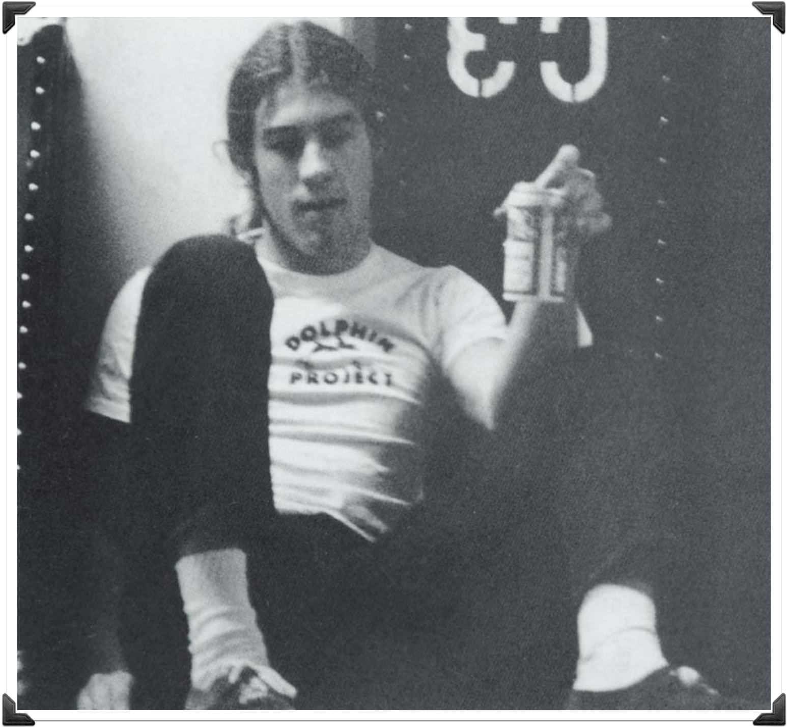

Home
Bio
▼
Introduction
Immediate Family
Career
Berry's Drug Addiction
Berry's Death and its Effect on Neil Young
Songs
▼
Old Man, 1972
Needle and the Damage Done, 1972
Tonight's the Night, 1975
Bruce Berry...

...was a working man